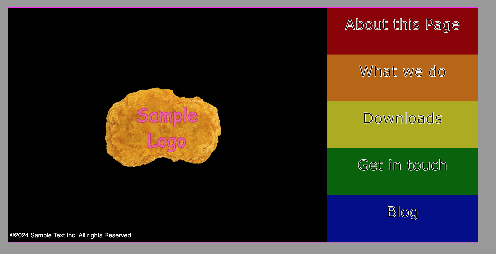
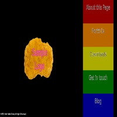
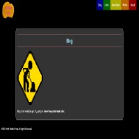
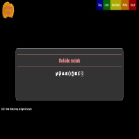
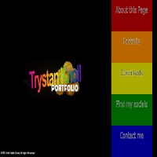
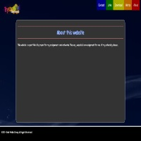
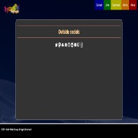

About this website
This website is a portfolio site, meant for my assignments and artworks. This very website is an assignment for one of my university classes. It was initially started on October 14, 2024 with simple sketched and mockups, shown below.


I was partly influenced by the website for Cartoon Network Studios which sadly no longer exists and was replaced with a redirect to their recruitment page on Instagram (thanks David Zaslav, you destroyer of dreams). I am thankful that the Internet Archive and the Wayback Machine exists so the site can be preserved in all its whimsy. (Click here to see it.)
The first functional prototype was uploaded to GitHub on November 4th. At the time, only the landing page was made, and everything was encased in a fixed 1200 x 600 window.
The website got an update a week later on November 11. This saw the removal of the fixed resolution and the addition of subpages.
  {kind=link}
{kind=link}
{kind=link}
This would be the final revision where a blog was considered. The next revision dropped it since my social media presence covered that.
On November 20th, the third revision released. This saw the replacement of the world-famous chicken nugget sample logo in favor of the current logo, as well as the addition of an animated background for animated pages.
  {kind=link}
{kind=link}
{kind=link}
This leads us to the current revision, which is where you are! Hello! This revision consolodated the social media link page and the contact form page into one and added a page detailing the tools I use. You may have seen it, or if not. there's a link at the top of the page. Feel free to explore and look around!
But what's coming in the future? I'm not sure, since the future is not predictable, but I do have some features I'd like to implement.
- Mobile-friendly version/Adaptive Design - The current version only has one design and it's only suited to modern desktop or laptop computers, and not modern smartphones. I'd like to have it where the current navbar gets replaced with a burger menu on narrow displays.
- Page transitions - I want pages to smoothly transition from one to another.
- A macOS-like dock - I wanted to make a faithful adaptation of the dock found in macOS. Examples exist but they don't have accurate animations. I want mine to be a perfect pixel-to-pixel recreation.
There may be more to follow so stay tuned.